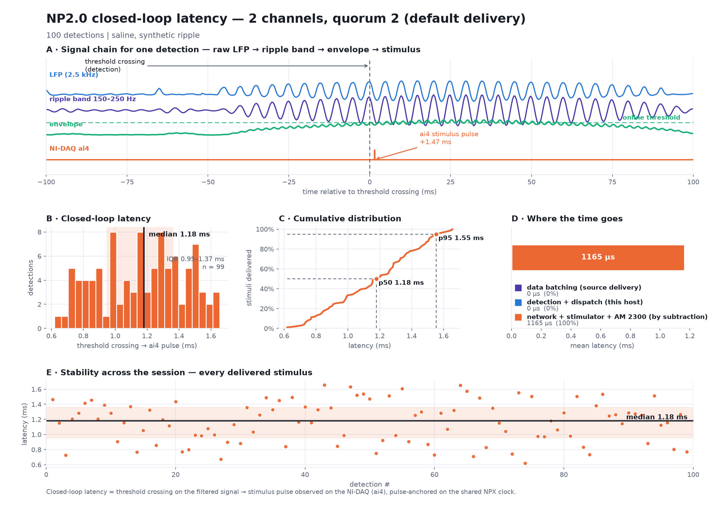
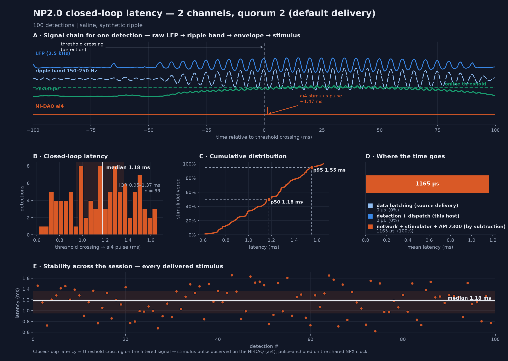

Neuropixels 2.0 — closed-loop ripple → stimulation results#
Real-hardware tests of the full closed loop on an NP2.0 multishank probe: synthetic sharp-wave ripple in saline → online detection → Raspberry Pi 3B+ / AM Systems 2300 → stimulus captured on NI-DAQ ai4.
Closed-loop latency = threshold crossing on the filtered signal → stimulus pulse observed on the NI-DAQ. Measured offline, pulse-anchored on the shared Neuropixels clock. Method and figures: Closed-Loop Latency.
Configuration#
| Probe / config | Neuropixels 2.0 multishank, NPX 2.0 Multishank with NI-DAQ |
| Detector input | data.lfp, derived from the 30 kHz raw band by a 2nd-order Bessel low-pass (−3 dB @ 400 Hz), then every 12th sample |
| Threshold | mean + 2.5 σ on the ripple envelope |
| Lockout | 200 ms |
| Stimulus | one biphasic pulse per detection (60 µs phase, 10 µs gap) on ai4 |
| NI-DAQ | PXI-6133, 40 kHz (25 µs edge resolution) |
On NP2.0 the electrode number is not the read-out channel; recordings store read-out channel ids and the ripple sidecar carries the electrode → channel map.
Latency results#


| test | detector | delivery | median | mean | IQR | p95 | n / unmatched |
|---|---|---|---|---|---|---|---|
np2_2channel_2required |
2 ch, quorum 2 | default | 1.179 ms | 1.165 | 0.945 – 1.366 | 1.554 | 99 / 0 |
np2_4channel_3required |
4 ch, quorum 3-of-4 | default | 1.173 ms | 1.179 | 0.945 – 1.610 | 1.610 | 99 / 0 |
0 unmatched in every test, and latency is flat across quorum size — the same result as NP1.0. Quorum decides which crossing triggers the stimulus, not the delay from that crossing to the pulse.
NP2.0 is ~0.3 ms faster than NP1.0 with default delivery (1.17 vs 1.48 ms). The mechanism is data delivery granularity rather than processing: NP2 derives its LFP from the 30 kHz raw stream, so samples reach the detector fresher than NP1's native 2.5 kHz LFP band, where a delivery block costs 214–631 µs of staleness (measured, default mode).
These recordings predate the per-stage latency instrumentation, so no stage decomposition is available for them; their totals are NI-DAQ-anchored and were re-verified with the corrected 2026-07-21 pipeline (both the clock-scale fix and the sync off-by-one wrap fix — neither changed these numbers).
ASAP delivery has not yet been measured on NP2.0. On NP1.0 it removed the batching term entirely and took the loop sub-millisecond at every quorum level (1.483 → 0.977 ms at 1 ch, 1.489 → 0.942 at 2 ch, 1.484 → 0.963 at 4 ch); the equivalent NP2.0 measurement is the next test.
Offline detector reproduction#
The NP2 detector can be reproduced exactly from a recorded raw band — 2nd-order Bessel data.lfp
→ every 12th sample → 26-tap 150–250 Hz ripple FIR → abs → 10-tap envelope FIR → the online per-channel
threshold → the quorum / coincidence / lockout state machine. With this exact chain the offline
reconstruction reproduces the online detector. Detail:
RippleClosedLoopAnalysis.md.
Reproduce#
python ripple_tools/run_np2_tests.py --recroot RecordingTests --n 1000
python ripple_tools/analyze_recording.py <recdir> --ws <recdir>/<name>_ws.jsonl --figs <recdir>/analysis
Recording directories hold the raw .bin bands + sidecars and are not version-controlled; the
analysis/ figures and _summary.json are.